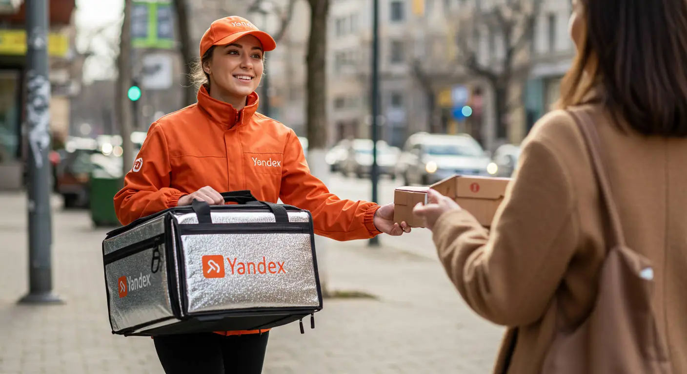
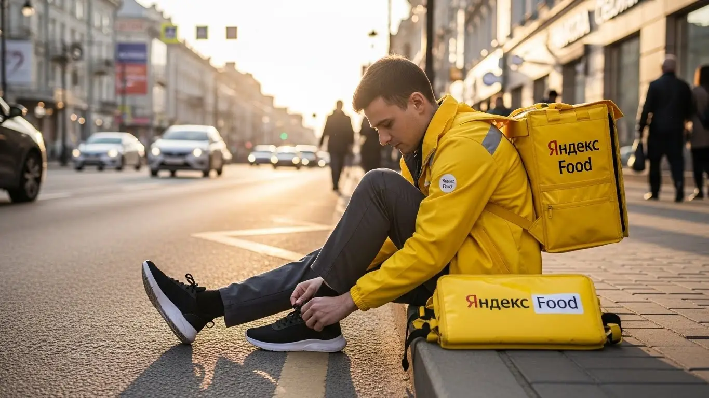
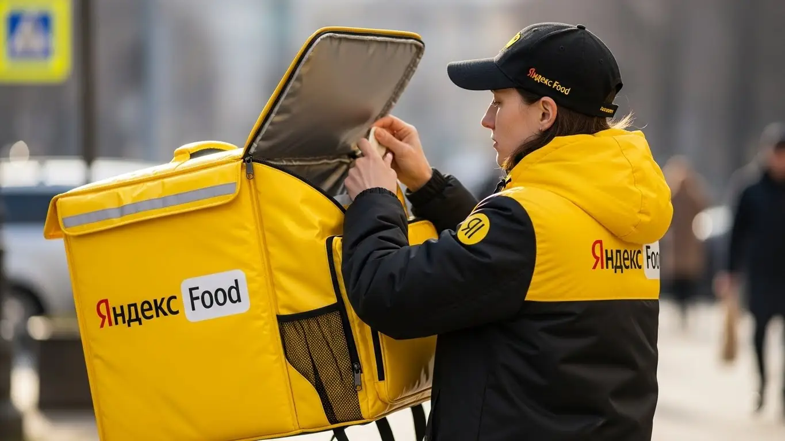
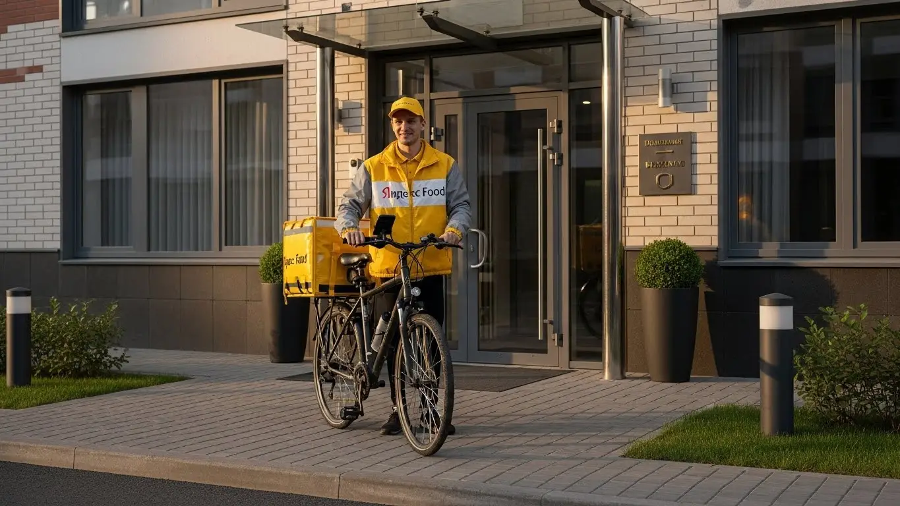

Доход курьера Яндекс Еда в Подольске 2025-2026: обзор условий

- Работа курьером Яндекс Еды в Подольске: для кого эта вакансия и что вы получите
- Сколько вы будете зарабатывать курьером в Подольске: калькулятор дохода и разбор выплат
- Реальный заработок курьера в Подольске: смены и месячный доход
- График работы и форматы занятости
- Требования к кандидату и документы
- Самозанятость, налоги и юридическая чистота
- Пошаговое оформление и первый выход на линию в Подольске
- Пешком, на вело или на авто: что выгоднее в Подольске
- Районы, маршруты и «топовые» зоны заказов в Подольске
- Безопасность, страховка, штрафы и оплата простоя
- Плюсы и возможные минусы работы курьером в Подольске
- Реальные истории и отзывы курьеров из Подольска
- Ответы на главные вопросы о работе курьером Яндекс Еды в Подольске
- Коротко о главном: шпаргалка для будущего курьера
- Итоги и твой следующий шаг
Все города
Думаешь, работа курьером Яндекс Еда в Подольске — это легкие деньги на свободном графике? Заманчивые цифры в рекламе видят все, но мало кто говорит про пробки на Революционном проспекте в час пик, убитые дороги в частном секторе и заказы в дальние новостройки Кузнечиков, которые съедают всё время и бензин. Я расскажу, как на самом деле обстоят дела с доставкой в нашем городе, без розовых очков и рекламной шелухи.
Поверь, разница между курьером, который в Подольске делает 3-4 тысячи за смену, и тем, кто едва отбивает расходы на топливо, — не в скорости. Она в знании «внутрянки»: где выше спрос, как работает приоритет, какой район выбрать в снегопад, а какой — в пятницу вечером. Чтобы заранее оценить свои возможности, стоит изучить актуальные условия и воспользоваться калькулятором дохода, который есть на официальной странице — работа курьером Яндекс Еда в Подольске. Большинство новичков выходят на линию, слепо веря навигатору, и в первый же месяц разочаровываются, потому что не учли налоги, амортизацию велика или машины и специфику заказов из Лавки, которые часто летят в самые неудобные точки.
В этом гиде мы всё разложим по полкам. Я честно посчитаю, сколько чистыми остаётся у пешего, вело- и автокурьера в Подольске после всех расходов. Покажу на карте «рыбные» районы с высоким спросом и «мертвые зоны», куда лучше не соваться. Разберём, как погода и сезонность влияют на доход, за что реально штрафуют и как этого избежать. И, конечно, сравним, где выгоднее — в Еде, Лавке или у конкурентов, которые тоже работают в нашем городе.
Меня зовут Алексей. Я сам откатал не одну тысячу километров по Подольску с желтым рюкзаком, а сейчас у меня свой небольшой таксопарк-партнёр, так что я вижу всю эту кухню с двух сторон. Здесь не будет рекламы и обещаний золотых гор. Только мой реальный опыт, цифры и советы, которые помогут тебе не наступить на грабли, на которых уже потоптались сотни новичков до тебя. Готов? Тогда давай по порядку, начнём с самого главного — с денег.
Но прежде чем мы зароемся в расчёты, давай по-быстрому пробежимся по основным моментам. Считай это навигатором по статье, чтобы ты сразу нашёл то, что волнует больше всего.
Ключевые вопросы о работе в Подольске: навигатор по статье
В этой статье ты ТОЧНО узнаешь:
- Сколько реально можно заработать в Подольске за смену и в месяц, если я пеший, на вело или на авто?
- В каких районах Подольска больше всего заказов и как выбирать «горячие» зоны, чтобы не простаивать?
- Что выгоднее в Подольске: работать пешком, на велосипеде или на своей машине?
- За что на самом деле снижают рейтинг и как работает оплата простоя, если заказов нет?
- Насколько сложно оформить самозанятость и как платить налоги, чтобы не было проблем?
- Как правильно планировать слоты в приложении, чтобы зарабатывать больше, особенно на подработке?
А если тебе некогда читать всю статью — переходи сразу к заключению, где ты найдёшь короткие ответы на все эти вопросы и указания, в каких разделах искать подробности.
А вот наглядная инфографика с ключевыми цифрами по Подольску, чтобы сразу было понятно, о каких деньгах идёт речь.
Работа курьером в Подольске: ключевые цифры
Работа курьером Яндекс Еды в Подольске: для кого эта вакансия и что вы получите
Многие думают, что работа курьером — это что-то сложное и только для самых выносливых. На деле же, в Подольске это одна из самых доступных и гибких вакансий, которая подойдёт очень разным людям. Здесь нет начальников в привычном понимании, жёсткого графика с девяти до шести и строгих требований к опыту. Главное — твоё желание работать и зарабатывать, а умное приложение «Яндекс Про» поможет со всем остальным.
Кому подойдёт эта работа в Подольске
Эта вакансия — отличный вариант для широкого круга людей. Во-первых, для студентов, которым нужна подработка после пар. Можно выходить на 3–4 часа вечером или в выходные, чтобы были деньги на личные расходы. Во-вторых, для тех, у кого нет опыта работы или кто ищет свой первый заработок. Здесь не нужно проходить долгих собеседований, а всё обучение проходит онлайн и занимает не больше пары часов.
Также это хороший выбор для водителей, которые хотят использовать свой автомобиль для заработка, но не готовы возить пассажиров в такси. Доставка заказов — более спокойный процесс. И конечно, это идеальный вариант для всех, кому важен свободный график и быстрые деньги. Ты сам решаешь, когда выходить на смену, а выплаты приходят на карту ежедневно. Даже если тебе 16-17 лет, ты можешь стать пешим или велокурьером с согласия родителей и работать в свободное от учёбы время.
Главные преимущества для жителей районов Кузнечики, Центральный, Юбилейный
Одно из главных удобств работы курьером в Подольске — возможность выходить на смены прямо из своего дома. Тебе не нужно тратить час-полтора на дорогу до «офиса». Живёшь в густонаселённом районе Кузнечики? Отлично, здесь всегда много заказов из местных кафе и магазинов. Обитаешь в Центральном районе? Ты окажешься в эпицентре спроса, где сосредоточены основные рестораны.
Жителям Юбилейного или других спальных районов тоже не придётся ехать в центр. Заказы есть везде, где живут люди. Ты просто включаешь приложение «Яндекс Про», выходишь из подъезда и начинаешь выполнять доставки в знакомых тебе кварталах. Это экономит не только время, но и деньги на проезд, а значит, твой чистый доход становится выше.
Краткое обещание по доходу и условиям
Если говорить о деньгах, то в Подольске курьер может рассчитывать на вполне достойный заработок. При частичной занятости, работая по 4–5 часов в день, реально получать 2500–3500 рублей за смену. Если же рассматривать это как полную занятость, то активные водители-курьеры на своём авто выходят на доход до 85 000–95 000 рублей в месяц.
Ключевые условия работы просты: свободный график, который ты сам составляешь в приложении, и ежедневные выплаты заработанных денег на твою банковскую карту. Начать можно без опыта, достаточно иметь смартфон на Android и желание работать. Всё остальное — термокороб, инструкции и поток заказов — предоставит сервис.
***
Из практики: у меня был парень, студент из Подольска, живёт в Кузнечиках. Он начинал работать пешком по 3-4 часа после учёбы, чисто в своём районе. За неделю спокойно делал 7-8 тысяч рублей, которых ему хватало на личные нужды. Потом купил себе недорогой велосипед и стал брать больше заказов, его доход вырос почти в полтора раза, потому что он успевал доставлять и в соседние кварталы. Это отличный пример того, как можно начать с малого и работать буквально у себя во дворе.
Краткий вывод: Работа курьером в Подольске — это не просто вакансия, а гибкий инструмент для заработка, доступный почти каждому. Он идеально подходит как подработка или полная занятость, позволяя работать рядом с домом. Мой совет: если ты новичок, начни с коротких смен в своём районе, чтобы освоиться без стресса и понять механику работы.
Сколько вы будете зарабатывать курьером в Подольске: калькулятор дохода и разбор выплат
Главный вопрос, который всех волнует, — «сколько я буду зарабатывать?». В отличие от работы с фиксированным окладом, зарплата курьера — это динамическая величина. Она зависит от множества факторов: твоего способа передвижения, количества часов на линии, времени суток и даже погоды. Но система абсолютно прозрачна, и ты всегда видишь в приложении, из чего складывается твой заработок за каждый заказ.
Из чего складывается доход курьера
Твой итоговый заработок за смену — это сумма нескольких составляющих. Давай разберём их по порядку:
- Оплата за заказ. Это базовая стоимость за то, что ты забираешь и доставляешь заказ.
- Доплата за расстояние. Чем дальше нужно нести или везти заказ, тем больше денег ты получаешь. Система честно считает каждый километр пути.
- Повышающие коэффициенты. В часы пик (обед, ужин), в выходные или в плохую погоду (дождь, снегопад) спрос на доставку резко растёт. В это время в определённых зонах города включаются «фиолетовые» зоны с коэффициентами, которые могут умножить стоимость заказа в 1.5, 2, а то и в 3 раза.
- Бонусы. Сервис часто предлагает персональные цели. Например, выполни 15 заказов за день и получи дополнительно 1000 рублей.
- Чаевые. Клиенты могут отблагодарить тебя за хорошую работу, оставив чаевые прямо в приложении. Вся эта сумма идёт тебе в карман, сервис не берёт с неё комиссию.
- Оплата простоя и компенсация проезда. Важный момент: если ты пришёл в ресторан, а заказ ещё не готов, сервис оплатит тебе время ожидания. А для пеших курьеров на длинных заказах может быть предусмотрена компенсация стоимости проезда на общественном транспорте.
Как пользоваться калькулятором дохода
Чтобы ты мог прикинуть свой потенциальный заработок ещё до выхода на линию, мы подготовили специальный калькулятор. Пользоваться им очень просто. Сначала выбери свой город — Подольск. Затем укажи, как планируешь доставлять: пешком, на велосипеде или на своём автомобиле.
После этого выбери, сколько часов в день и сколько дней в неделю ты готов работать. Калькулятор, основываясь на средних данных по городу, покажет тебе примерный диапазон твоего дохода за день и за месяц. Это не стопроцентная гарантия, но очень хороший ориентир, который поможет понять, на какие цифры можно рассчитывать при выбранной тобой загрузке.
Прикинь свой доход в Подольске
8 часов
5 дней
*Расчёт основан на средней ставке для Подольска и не учитывает бонусы, чаевые и коэффициенты в часы пик. Ваш реальный доход может быть выше.
Чтобы увидеть более точные цифры и актуальные условия, загляни на официальную страницу — там есть подробный калькулятор, ответы на вопросы и форма заявки: работа курьером Яндекс Еда в твоём городе.
Примеры расчёта для пешего, вело- и авто‑курьера в Подольске
Давай посмотрим на конкретных примерах, как может выглядеть заработок в Подольске.
- Пеший курьер. Студент выходит на 4-часовую смену в центре города, в районе Революционного проспекта, во время обеденного пика (с 12:00 до 16:00). За это время он успевает выполнить 7–9 коротких заказов. Его средний заработок за такую подработку составит около 1400–1800 рублей.
- Велокурьер. Парень работает по вечерам, с 18:00 до 23:00, и в выходные. Он быстро перемещается между спальными районами, например, от Юбилейного до Кутузово, выполняя 12–15 заказов за 5-часовую смену. За счёт скорости и повышенного вечернего спроса его доход может достигать 2500–3000 рублей за выход.
- Водитель-курьер. Мужчина работает на своей машине полный день, около 8–9 часов. Он берёт заказы по всему городу, включая дальние доставки в Климовск или по Варшавскому шоссе. В обычный день его заработок составляет 4000–5000 рублей. А если пойдёт сильный дождь или снегопад, то за счёт высоких коэффициентов эта сумма может вырасти до 6000–7000 рублей за смену.
***
Из практики: мой знакомый водитель-курьер в Подольске как-то работал в субботу, когда весь день лил ледяной дождь. Спрос был бешеный, коэффициенты в приложении не опускались ниже х2.5. Он начал смену в 11 утра, а закончил в 9 вечера, сделал два небольших перерыва. За этот день он выполнил 28 заказов и заработал «грязными» почти 9 500 рублей. Конечно, это не каждый день так, но это показывает, как сильно погода и спрос могут влиять на итоговый доход.
Краткий вывод: Твой заработок курьером напрямую зависит от твоей активности, выбранного транспорта и умения ловить моменты высокого спроса. Не стоит бояться плохой погоды — именно в такие дни можно заработать больше всего. Мой совет: изучи карту спроса в приложении «Яндекс Про» и старайся планировать свои смены на вечерние часы и выходные дни, чтобы сразу работать с повышенными коэффициентами.
Реальный заработок курьера в Подольске: смены и месячный доход
Давай начистоту, без рекламных обещаний. Вопрос «сколько реально можно заработать курьером» — главный, и ответ на него не может быть одной цифрой. Твой доход в Подольске будет зависеть от трёх вещей: на чём ты доставляешь, сколько часов работаешь и, что самое важное, как ты это делаешь. Можно откатать 8 часов и привезти домой 2000 рублей, а можно за 4 часа в правильное время и в правильном месте сделать 3000. Разница — в подходе.
Я видел ребят, которые начинали для подработки, а через пару месяцев уходили с основной работы, потому что здесь выходило больше и нервов тратилось меньше. А видел и тех, кто быстро сдувался, потому что ждал, что заказы будут сыпаться на голову сами. Система вроде Яндекс Про даёт все инструменты, чтобы зарабатывать хорошо, но головой думать всё равно придётся. Дальше я разложу по полочкам, какие цифры реальны для Подольска и как на них выйти.

Диапазон дохода для подработки и полной занятости
Цифры, которые я привожу, — это средние значения по Подольску за вычетом налога самозанятого, но без учёта расходов на топливо или обслуживание транспорта. Это то, что ты увидишь в приложении «Яндекс Про» по итогам дня или месяца.
Если ты ищешь подработку на 2–4 часа в день, например, после учёбы или основной работы, ориентируйся на следующие суммы за смену:
- Пеший курьер: 800 – 1500 рублей. Идеально для центра, где много заказов на короткие расстояния.
- Велокурьер: 1000 – 1800 рублей. На велосипеде ты мобильнее, покрываешь большие расстояния, поэтому и доход выше.
- Автокурьер: 1500 – 2500 рублей. На машине ты берёшь самые дорогие, дальние заказы, но не забывай вычитать расходы на бензин.
При полной занятости, когда ты работаешь по 8–10 часов в день 5-6 дней в неделю, цифры совсем другие. Это уже полноценная работа со стабильным доходом.
- Пеший курьер: 2500 – 3500 рублей в день или 50 000 – 70 000 рублей в месяц.
- Велокурьер: 3000 – 4500 рублей в день или 65 000 – 90 000 рублей в месяц.
- Автокурьер: 4000 – 6000 рублей в день или 80 000 – 120 000 рублей в месяц. Важно помнить, что это доход без учёта расходов на топливо.
Как район, время суток и погода влияют на доход
Запомни три кита высокого заработка: место, время и погода. Если ты научишься их чувствовать, будешь всегда с деньгами. Система платит больше там и тогда, где заказов много, а курьеров мало. Это называется «повышающий коэффициент» — на карте в «Яндекс Про» такие зоны подсвечиваются фиолетовым.
В Подольске самые «жирные» районы — это, во-первых, центр в районе Революционного проспекта и станции Подольск, где сосредоточены кафе и офисы. Во-вторых, это огромные спальные районы, особенно Кузнечики, где вечером тысячи семей заказывают ужин. Время — это обеденный пик (с 12:00 до 14:00) и вечерний (с 18:00 до 21:00). Пятница вечер, суббота и воскресенье — это вообще твой звёздный час, коэффициенты могут взлетать в 1.5-2 раза.
Ну и погода — наш лучший друг. Как только начинается дождь, снегопад или сильная жара, люди ленятся выходить из дома, а многие курьеры — с линии. Спрос взлетает, а предложение падает. В такие моменты за один заказ можно получить столько же, сколько за три в обычную погоду. Плюс, клиенты в непогоду чаще оставляют хорошие чаевые — ценят твой труд.
Советы по увеличению заработка от опытных курьеров
Чтобы не просто работать, а именно зарабатывать, нужно подходить к делу с умом. Вот несколько проверенных советов, которые помогут увеличить доход без лишних переработок. Не гоняйся за одним заказом через весь город, даже если он кажется дорогим. Лучше стабильно выполнять по 3-4 заказа в час в «горячей» зоне, чем потратить час на одну дальнюю поездку.
Выбирай слоты с умом. Заранее планируй свою неделю в «Яндекс Про» и бронируй плановые слоты на вечернее время и выходные. Такие слоты часто идут с минимальной гарантией оплаты, то есть ты не заработаешь меньше определённой суммы, даже если заказов будет мало. Изучай карту спроса в приложении. Видишь фиолетовую зону в районе ТЦ «Капитолий»? Значит, нужно смещаться туда.
Комбинируй транспорт, если есть возможность. В хорошую погоду днём можно эффективно работать на велосипеде в центре, а вечером, когда заказы идут в спальники вроде Высотного района или в пригород (Климовск, Щербинка), пересесть на машину. Пеший курьер будет максимально эффективен на небольшом пятачке с кучей ресторанов, например, в историческом центре, где на машине просто не развернёшься.
Сравнение дохода в Подольске по форматам работы
| Параметр | Пеший курьер | Велокурьер | Автокурьер |
|---|---|---|---|
| Доход за подработку (3-4 часа) | 800 – 1500 ₽ | 1000 – 1800 ₽ | 1500 – 2500 ₽ |
| Доход за полный день (8-10 часов) | 2500 – 3500 ₽ | 3000 – 4500 ₽ | 4000 – 6000 ₽ |
| Лучшие зоны в Подольске | Центр, ул. Кирова | Центр, Кузнечики, Высотный | Весь город, пригород (Климовск) |
| Главное преимущество | Нет расходов на транспорт | Скорость и маневренность | Комфорт, дорогие и дальние заказы |
Практический кейс: Вот реальный пример. У меня есть знакомый водитель-курьер, парень 25 лет. Поначалу он просто выходил на линию, когда было свободное время, и жаловался, что заработок нестабильный. Мы с ним сели, открыли карту Подольска и его статистику. Выяснилось, что он катался по окраинам в середине дня. Я посоветовал ему сменить тактику: выходить на линию строго с 17:00 до 22:00 со среды по воскресенье и начинать смену в районе Кузнечиков. Уже через неделю он показал мне приложение: его средний часовой заработок вырос почти вдвое. За одну дождливую пятницу он сделал больше 5000 рублей за 5 часов.
В итоге, твой реальный заработок — это не случайность, а результат твоего планирования. Не ленись анализировать, где и когда больше заказов, и подстраивай свой график под пики спроса. Мой главный совет: работай не больше, а умнее.
График работы и форматы занятости
Главный плюс этой работы — свобода. Ты сам себе начальник и сам решаешь, когда работать, а когда отдыхать. Нет никаких обязательных смен с 9 до 18, штрафов за опоздание на пять минут и начальника, который стоит над душой. Этот свободный график позволяет вписать доставку в любой образ жизни: будь ты студент, который ищет деньги на карманные расходы, или человек, которому нужен стабильный доход на полную ставку.
Приложение «Яндекс Про» — это твой рабочий кабинет. Через него ты видишь зоны с заказами, выбираешь слоты и отслеживаешь свой доход. Никаких звонков диспетчеру и бумажной волокиты. Всё максимально просто и прозрачно, чтобы ты мог сосредоточиться на главном — доставке заказов и заработке.

Подработка после учёбы или основной работы
Совмещать доставку с чем-то ещё — самый популярный сценарий. Это идеальный вариант, чтобы закрыть кредит, накопить на отпуск или просто иметь дополнительные деньги, не меняя привычный уклад жизни. Вот пара реальных примеров из Подольска.
Пример 1: Студент на велосипеде. Парень учится в местном колледже. Занятия заканчиваются в 15:00-16:00. Он приезжает домой, переодевается, берёт велосипед и выходит на 4-часовой слот с 17:00 до 21:00. Работает в своём районе — например, в Центральном или на Юбилейной. В будни делает по 1200-1500 рублей, а в выходные может отработать и 6-8 часов, заработав 3000-4000 рублей. В месяц у него выходит стабильные 30-40 тысяч, что для студента отличные деньги.
Пример 2: Офисный работник на авто. Мужчина работает в офисе 5/2 до 18:00. Ему нужны были деньги на ремонт в квартире. Он начал выходить на линию на своей машине по вечерам в пятницу и на полный день в субботу. Он специально выбирает заказы из гипермаркетов типа «Глобус» или «Леруа Мерлен», так как они обычно дорогие и на дальние расстояния. За такие выходные он дополнительно зарабатывает 10-15 тысяч рублей в неделю, что полностью покрывает его расходы на ремонт.
Полная занятость: как выглядит типичный день курьера
Если ты рассматриваешь доставку как основную работу, твой день будет более структурированным, но всё таким же гибким. Вот как обычно выглядит день автокурьера в Подольске, который работает на полную ставку.
Он выходит на линию около 10 утра. Утренние часы — это время доставки документов и посылок, поэтому он держится ближе к деловым частям города. К 12:00 смещается в центр, где начинаются обеденные заказы из ресторанов по линии Яндекс Еды. Пик длится до 15:00, после чего наступает небольшое затишье. Это время можно использовать для обеда, заправки или выполнения пары заказов из магазинов.
Основной заработок начинается вечером, примерно с 18:00. Курьер перемещается в густонаселённые спальные районы, такие как Кузнечики или Силикатная, где спрос на доставку еды максимальный. Здесь он работает до 22:00-23:00, выполняя заказы один за другим благодаря высоким коэффициентам. В конце дня он видит в приложении свой заработок, который при таком подходе редко бывает меньше 4500-5000 рублей.
Как планировать слоты и выходы через приложение «Яндекс Про»
«Яндекс Про» — твой главный инструмент планирования. В нём есть два основных режима работы: свободный выход и плановые слоты. В первом случае ты просто нажимаешь кнопку «На линию» и начинаешь получать заказы. Во втором — заранее бронируешь временной интервал в определённом районе.
Плановые слоты — это твой ключ к стабильности. Во-первых, за ними часто закреплён бонус или минимальная гарантированная сумма заработка. Во-вторых, бронируя слот, ты показываешь системе свою надёжность, что может положительно сказаться на твоём рейтинге. Самые выгодные слоты (вечера, выходные) разбирают быстро, поэтому лучше планировать свою неделю заранее.
Очень важно не опаздывать на начало забронированного слота. Система отслеживает твою пунктуальность. Постоянные опоздания снижают твой рейтинг приоритета, и заказы тебе будут предлагать в последнюю очередь. Поэтому, если забронировал слот с 18:00, будь в выбранной зоне уже в 17:55. Это простая дисциплина, которая напрямую влияет на твой доход.
Практический кейс: Ко мне пришёл парень, который только начал работать пешим курьером. Он жаловался, что подолгу ждёт заказов. Я открыл его приложение и увидел, что он просто выходит на линию в случайное время в своём спальном районе. Я объяснил ему, как смотреть карту спроса и бронировать слоты. Мы вместе забронировали ему 4-часовой слот на следующий день в центре Подольска в обеденное время. На следующий день он позвонил и сказал, что за эти 4 часа сделал больше заказов, чем за предыдущие два дня.
В общем, гибкий график не означает хаотичный. Успех в этой работе — это сочетание свободы и самодисциплины. Используй инструменты, которые даёт «Яндекс Про», планируй своё время, и тогда твой доход будет стабильным и предсказуемым. Мой совет: даже если это подработка, относись к ней серьёзно, и результат тебя порадует.
Требования к кандидату и документы
Многие думают, что чтобы стать курьером, нужны особые навыки или стопка бумаг. На деле всё гораздо проще. Для этой работы не важен твой диплом или прошлый опыт. Главное — быть ответственным, пунктуальным и хорошо ориентироваться в городе. Если с этим порядок, считай, полдела сделано. Остальное — чистая формальность, с которой разберёмся прямо сейчас.
Возраст, гражданство и базовые условия
Начнём с основ. Чтобы стать курьером на автомобиле, тебе должно быть минимум 18 лет. Для пеших и велокурьеров есть хорошие новости — начать можно раньше, но об этом чуть ниже. Обязательное условие для работы — гражданство РФ или одной из стран ЕАЭС (Беларусь, Казахстан, Армения, Киргизия). Никаких разрешений на работу или патентов в этом случае не требуется.
Что касается физической формы, то здесь не ждут олимпийских рекордов. Если ты пеший курьер, будь готов много ходить. Для велокурьера важна выносливость, чтобы крутить педали несколько часов подряд. Водителю-курьеру физически проще, но требуется больше концентрации за рулём.
По сути, если для тебя не проблема подняться на пятый этаж без лифта или проехать на велосипеде пару километров по Подольску, ты справишься. Эти базовые требования к кандидатам вполне выполнимы.
Какие документы нужны для работы курьером
Список документов для работы курьером минимальный, и собрать его можно за один вечер. Никакой беготни по инстанциям не предвидится. Вот что тебе понадобится:
- Паспорт. Основной документ, удостоверяющий личность. Нужен для оформления и регистрации в сервисе.
- ИНН (Идентификационный номер налогоплательщика). Необходим для регистрации в качестве самозанятого и уплаты налогов. Если не помнишь свой номер, его за пару минут можно узнать на сайте ФНС.
- Банковская карта. Подойдёт карта любого российского банка, оформленная на твоё имя. На неё будут приходить выплаты.
- Медицинская книжка. Для доставки запечатанных заказов из ресторанов она обычно не требуется. Но если планируешь работать с доставкой продуктов из магазинов (например, из Яндекс Лавки), медкнижка может понадобиться. Эти условия лучше уточнить на этапе оформления — тебе сообщат, если она будет нужна.
Подготовь эти документы заранее, чтобы регистрация прошла максимально быстро. Сделай чёткие фото паспорта (главный разворот и прописка) — они понадобятся для онлайн-анкеты.
Можно ли работать с 16 лет и какие есть альтернативы
Теперь самый частый вопрос: со скольки лет можно устроиться? Да, в Яндекс Еде можно работать пешим или велокурьером с 16 лет. Это отличная возможность для подработки после учёбы. Однако здесь есть несколько важных юридических нюансов.
Во-первых, потребуется письменное согласие одного из родителей или опекуна. Это стандартная процедура, которая защищает и тебя, и компанию. Во-вторых, твой рабочий день будет ограничен по времени согласно Трудовому кодексу РФ для несовершеннолетних — никаких ночных смен и переработок. Оформление в этом случае идёт не как самозанятость, а через партнёра сервиса. А вот водителем-курьером можно стать строго с 18 лет при наличии водительских прав.
Если по какой-то причине этот вариант не подходит, альтернативы для подростков в Подольске есть, но они часто менее гибкие. Можно раздавать листовки, работать помощником в кафе или на автомойке. Но, по опыту, работа курьером даёт больше свободы в графике и позволяет зарабатывать больше, совмещая с учёбой.
Был у меня случай: 17-летний парень из Подольска, район Кузнечики, хотел накопить на новый телефон. Думал, что до 18 лет никуда не возьмут. Я ему объяснил схему: взяли у мамы письменное согласие, он зарегистрировался через партнёра. Начал кататься на своём велосипеде по району после колледжа по 3–4 часа в день. За первый же месяц заработал на гаджет, и ещё остались деньги. Главное — не бояться и делать всё по правилам.
В общем, требования к кандидатам вполне адекватные и не создают лишних барьеров. Основной пакет документов есть у каждого, а возрастные ограничения для пеших и велокурьеров позволяют начать зарабатывать довольно рано. Главное — твоё желание работать и ответственность.
Самозанятость, налоги и юридическая чистота
Многих новичков пугают слова «самозанятость» и «налоги». Кажется, что оформление статуса — это сложно, муторно и связано с бумажной волокитой. На самом деле, это самый простой способ работать официально, получая «белый» доход. Забудь про серые схемы и получение денег на карту с риском блокировки. Сейчас я объясню, как всё устроено.
Почему курьеры Яндекс Еды работают как самозанятые
Самозанятость, или налог на профессиональный доход (НПД), — это специальный налоговый режим для тех, кто работает на себя. Яндекс Еда сотрудничает с курьерами именно в таком формате, потому что это выгодно и удобно обеим сторонам. Для тебя это означает полную легальность и прозрачность.
Ты получаешь официальный доход, который можно подтвердить справкой для банка, например, для получения кредита. При этом нет никакой сложной бухгалтерии: не нужно вести отчётность или сдавать декларации. Всё происходит автоматически через специальное приложение. Это прямой договор с сервисом, который даёт тебе гарантии и юридическую чистоту.
Как за 10 минут оформить самозанятость через «Мой налог»
Регистрация статуса самозанятого занимает меньше времени, чем заварить чай. Никаких поездок в налоговую инспекцию не требуется, всё оформление проходит онлайн.
Вот простая пошаговая инструкция:
- Скачай приложение. Зайди в Google Play или App Store и найди официальное приложение ФНС — «Мой налог».
- Начни регистрацию. Открой приложение и нажми «Стать самозанятым». Самый быстрый способ — «Регистрация по паспорту РФ».
- Отсканируй паспорт. Наведи камеру телефона на главный разворот паспорта. Приложение само распознает данные — просто проверь их.
- Сделай селфи. Приложение попросит сделать фото твоего лица для подтверждения личности. Просто моргни на камеру, когда появится подсказка.
- Подтверди регистрацию. После проверки данных нажми кнопку «Подтверждаю». Всё, с этого момента ты официально самозанятый.
Весь процесс действительно занимает 5–10 минут. После этого нужно будет дать приложению «Яндекс Про» разрешение на взаимодействие с «Моим налогом», чтобы чеки за твой доход формировались автоматически.
Сколько и как платить налоги
Теперь о самом главном — о деньгах. Ставка налога для самозанятого курьера максимально простая и низкая. Ты платишь 6% с доходов, полученных от юридических лиц. Поскольку Яндекс — это юридическое лицо, именно эта ставка применяется к твоему заработку.
Процесс уплаты налога полностью автоматизирован. Когда Яндекс переводит тебе деньги за выполненные заказы, информация об этом поступает в ФНС. Приложение «Мой налог» само формирует чек и рассчитывает сумму налога. Тебе ничего делать не нужно.
Раз в месяц, до 12-го числа, приложение пришлёт уведомление с итоговой суммой налога за предыдущий месяц. Оплатить его нужно до 28-го числа, это можно сделать прямо в приложении с банковской карты.
Это гораздо проще и безопаснее, чем работать неофициально. Ты спишь спокойно, зная, что у налоговой нет к тебе вопросов, а банк не заблокирует карту из-за «подозрительных» переводов. Плюс, всем новым самозанятым государство даёт бонус — 10 000 рублей, который автоматически расходуется на уплату налога, временно снижая ставку.
Один из моих водителей в Подольске долго боялся этой самозанятости. Работал через парк, привык к наличке. Я его убедил попробовать: мы сели в машину, скачали «Мой налог» и за 5 минут по паспорту его зарегистрировали.
Когда он увидел, как после первой же выплаты в приложении автоматически появился чек и рассчитался налог, он выдохнул. А через полгода пришёл благодарить: смог взять небольшой кредит на ремонт, потому что предоставил в банк официальную справку о доходах.
В итоге, самозанятость — это не проблема, а удобный инструмент. Он делает твою работу полностью легальной, не требуя от тебя никаких усилий по ведению отчётности. Это современный подход, который защищает твои интересы и даёт уверенность в завтрашнем дне.
Пошаговое оформление и первый выход на линию в Подольске
Многих пугает сама мысль об устройстве на работу: анкеты, собеседования, долгое ожидание. В Яндекс Еде всё иначе. Процесс максимально упрощён и рассчитан на то, чтобы ты мог начать зарабатывать как можно быстрее, буквально за один день. Это отличная подработка со свободным графиком, где нет лишней бюрократии — только заказы и деньги.
Шаг 1–2: анкета и онлайн‑обучение
Первый шаг — это заполнение простой анкеты на сайте. Никаких вопросов про карьерные амбиции или кем ты видишь себя через пять лет. Основные требования — базовые данные: ФИО, дата рождения, гражданство и номер телефона. Весь процесс занимает 10–15 минут. Чтобы пройти проверку ещё быстрее, подготовь паспорт и ИНН заранее.
Как только твои данные подтвердят, тебе откроется доступ к короткому онлайн-обучению. Это не нудные лекции, а несколько коротких видеороликов и тестов. Тебе покажут, как пользоваться приложением «Яндекс Про», как правильно общаться с клиентами и ресторанами, что делать в нестандартных ситуациях. Тесты элементарные, нацелены на проверку здравого смысла и понимания основных правил сервиса. Прошёл их — и ты почти готов к работе.
Шаг 3: получение сумки и доступа к заказам в Подольске
Следующий этап — экипировка. Главное — это фирменный термокороб или термосумка. Без неё работать с заказами еды нельзя, это стандарт качества сервиса. В Подольске получить её можно в офисе партнёра, в специальном пункте выдачи или даже заказать доставку на дом. Не нужно ничего искать самому — после успешного обучения в приложении «Яндекс Про» появятся все актуальные адреса и контакты.
Как только ты получишь сумку и активируешь её в приложении, твой профиль станет полностью активным. С этого момента ты видишь на карте все доступные заказы, зоны с повышенным спросом и можешь планировать своё рабочее время. Считай, что это твой финальный шаг перед тем, как заработать первые деньги.
Шаг 4: первый слот и первый доход
Теперь самое интересное. Открываешь «Яндекс Про», смотришь на карту Подольска и выбираешь свой первый слот — это запланированный отрезок времени, когда ты будешь на линии. Для начала советую выбрать знакомый тебе район, например, тот, где живёшь. Так ты будешь уверенно ориентироваться и не потратишь время на поиски нужного адреса. Выбираешь слот на 2–3 часа, выходишь на улицу, нажимаешь кнопку «Начать» — и всё, ты в работе.
Первые заказы обычно приходят быстро, особенно если ты в зоне с хорошим спросом. Система видит новичка и старается подкинуть несложные доставки, чтобы ты втянулся. Выполнил пару заказов — и вот, на твоём балансе уже первые заработанные деньги. Сервис предлагает ежедневные выплаты, так что средства можно вывести на карту в тот же день. Никаких двухнедельных ожиданий зарплаты, всё происходит здесь и сейчас.
Вот реальный пример. Мой знакомый студент решил попробовать эту подработку. Утром в среду он заполнил анкету, к обеду прошёл обучение. Днём съездил в офис партнёра на Большой Серпуховской и забрал термокороб. Вечером того же дня выбрал 4-часовой слот в своём районе Кузнечики, пользуясь свободным графиком. Спокойно доставил семь заказов из местных кафе и магазинов. К ночи на его балансе было около 1800 рублей. Он был удивлён, насколько всё быстро и просто.
В итоге, весь процесс от анкеты до первого заработка реально уложить в один день. Главное — не тянуть и действовать последовательно. Так что стать курьером можно буквально за несколько часов, даже без опыта работы.
Пешком, на вело или на авто: что выгоднее в Подольске
Выбор транспорта — это не просто вопрос удобства. Это твой главный инструмент, который напрямую влияет на доход и условия работы. Подольск — город контрастный: тут и плотный центр с пробками, и широкие проспекты в спальных районах, и частный сектор на окраинах. Поэтому то, что идеально для одного района, будет совершенно неэффективно в другом. Давай разберёмся, на чём выгоднее всего передвигаться именно здесь.

Пеший курьер: для центра и плотной застройки в Подольске
Пеший курьер — отличный вариант для старта, так как не требует никаких вложений и опыта. Этот формат идеален для центральной части Подольска. Представь район вокруг Революционного проспекта, улиц Кирова и Комсомольской в час пик: на машине там стоять дольше, чем идти пешком. А заказов из кафе, ресторанов и магазинов там море. Пеший курьер легко срезает путь через дворы, не ищет парковку и доставляет заказы на короткие расстояния (1–2 км) быстрее любого автомобиля.
Также пешая доставка удобна в густонаселённых кварталах с плотной застройкой, например, в районе железнодорожной станции Подольск или в старых микрорайонах. Там много заказов «в соседний дом», и бегать с ними пешком гораздо продуктивнее. Ты не тратишься на бензин или проезд, а вся выручка — твоя. Плюс это неплохая физическая нагрузка, за которую тебе ещё и платят.
Велокурьер: быстрые доставки между спальными районами
Курьер на велосипеде — это золотая середина между скоростью и затратами. Для Подольска с его большими спальными районами это, пожалуй, один из самых эффективных способов доставки. На велосипеде ты покрываешь расстояния в 3–5 км значительно быстрее пешехода, но при этом всё так же не зависишь от пробок и можешь использовать короткие пути через парки и дворы. Это настоящий «оплачиваемый фитнес».
Идеальные локации для велокурьера в Подольске — это микрорайоны Кузнечики и Юго-Западный. Они огромные, и пешком от одного конца до другого идти долго, а на машине можно застрять на внутренних проездах. На велосипеде же ты мобилен, быстро забираешь заказы из местных торговых центров или пиццерий и развозишь их по окрестным многоэтажкам. За счёт скорости ты успеваешь выполнить больше заказов в час, а значит, и твой доход растёт.
Водитель‑курьер: заказы по всему городу и пригороду Климовска и Щербинки
Работа курьером на своем авто открывает доступ к самым дорогим и дальним заказам. Если у тебя есть машина, ты можешь работать по всему Подольску и захватывать его пригороды, такие как Климовск, Щербинка или посёлки в сторону Домодедово. Водитель-курьер без проблем доставит большой заказ из гипермаркета «Глобус» или несколько пакетов из «Леруа Мерлен». Такие доставки оплачиваются значительно выше.
Особенно выгодно работать на автомобиле в плохую погоду — дождь, снег, сильный мороз. В это время количество пеших и велокурьеров на линии резко сокращается, а спрос на доставку, наоборот, взлетает. Коэффициенты в приложении становятся максимальными, и за одну поездку можно заработать как за несколько обычных. Кроме того, машина незаменима для ночных смен и доставки в отдалённые районы или частный сектор, куда общественный транспорт ходит плохо.
Сравнение форматов доставки в Подольске
| Параметр | Пеший курьер | Велокурьер | Водитель-курьер |
|---|---|---|---|
| Оптимальные районы | Центр (Революционный пр-т, ул. Кирова), районы у ст. Подольск | Крупные спальные районы (Кузнечики, Юго-Западный) | Весь город, пригороды (Климовск, Щербинка), дальние районы |
| Средний доход в час | Низкий-средний | Средний-высокий | Высокий |
| Расходы | Минимальные (удобная обувь) | Обслуживание велосипеда | Бензин, амортизация авто, страховка |
| Главные плюсы | Нет затрат, не зависит от пробок на коротких дистанциях | Скорость, маневренность, экономия, польза для здоровья | Комфорт, большие и дорогие заказы, работа в любую погоду |
| Главные минусы | Физическая усталость, зависимость от погоды, малый радиус | Нужен свой велосипед, зависимость от погоды | Расходы на топливо и обслуживание, пробки, поиск парковки |
У меня в парке есть водитель-курьер, который выходит на подработку по вечерам. Недавно в пятницу был сильный ливень. Он вышел на линию и увидел, что почти весь Подольск горит «фиолетовым» — это знак максимального спроса. Он взял заказ из ресторана в центре и повёз его в частный сектор за Климовском. Потом забрал объёмный заказ из строительного магазина и доставил на Силикатную. За 4 часа под дождём, комфортно сидя в машине, он заработал около 4000 рублей. Пеший курьер за это время в такую погоду сделал бы в разы меньше.
В общем, выбор транспорта — это твой стратегический выбор, который определяет и потенциальный заработок, и плюсы и минусы работы. Оцени, где ты живёшь, какие районы знаешь лучше и готов ли вкладываться в бензин. Новичку советую: если есть велосипед — начинай с него, это самый сбалансированный вариант для Подольска. Если нет — попробуй поработать пешим курьером в своём районе, чтобы понять механику, а дальше уже решишь, стоит ли пересаживаться на колёса.
Районы, маршруты и «топовые» зоны заказов в Подольске
Знание города — твой главный козырь. Можно просто кататься по улицам в ожидании заказа, а можно быть там, где они появляются постоянно, и увеличить свой доход в полтора-два раза за то же время. В Подольске, как и в любом городе, есть свои «рыбные места» и часы пик. Главное — понимать логику спроса и пользоваться инструментами, которые даёт приложение «Яндекс Про».
Твоя задача — не просто выполнять заказы, а выстраивать смены так, чтобы минимизировать пустые пробеги. Поначалу придётся поизучать карту и поэкспериментировать с районами, но уже через неделю ты начнёшь чувствовать, где и когда лучше находиться. Это как в такси: опытный водитель знает, когда ехать в аэропорт, а когда дежурить у бизнес-центра. Принцип тот же, только масштабы поменьше.
Где больше всего заказов: ТРЦ, бизнес-центры и туристические места
Самые прибыльные зоны — это, конечно, места, где люди тратят деньги и отдыхают. В Подольске это в первую очередь крупные торговые центры. Запомни два главных названия: ТРЦ «Капитолий» на Большой Серпуховской и ТРК «Кварц» на Комсомольской. Внутри и рядом с ними множество ресторанов, фуд-кортов и кафе. В обеденное время (с 12:00 до 15:00) и вечером (с 18:00 до 21:00) здесь почти всегда горит «фиолетовая» зона повышенного спроса. Заказы отсюда часто идут в ближайшие офисы и жилые дома.
Кроме ТРЦ, обращай внимание на деловые кварталы. В Подольске нет единого «сити», но есть скопления офисов в центре и в промышленных зонах, которые сейчас активно застраиваются бизнес-центрами. В будни днём оттуда идёт стабильный поток заказов на бизнес-ланчи. В выходные и праздничные дни хорошо работает исторический центр и места отдыха, например, район усадьбы «Ивановское». Люди гуляют, сидят в кафе и охотно заказывают еду на дом после прогулки.
Работа в своём районе: примеры для популярных жилых кварталов
Многие думают, что весь заработок сосредоточен только в центре. Это не так. Работа в своём спальном районе часто бывает даже выгоднее, особенно если это подработка в свободное время. Ты знаешь каждую тропинку, не тратишь время и деньги на дорогу до «топовой» зоны и выполняешь заказы быстрее. В Подольске для этого отлично подходят крупные жилые массивы, где много и жителей, и заведений.
Возьмём, к примеру, микрорайон Кузнечики. Огромное количество многоэтажек, а значит, тысячи потенциальных клиентов. Здесь на каждом углу пиццерии, суши-бары, сетевые фастфуды и магазины. Вечером в пятницу или в плохую погоду в выходной день спрос тут не меньше, чем в центре. Другой хороший пример — Юбилейный район. Он более старый, но тоже густонаселённый, со своей инфраструктурой. Работая здесь, пеший курьер или курьер на велосипеде может за час сделать 3–4 доставки в соседние дома, пока кто-то будет ехать с одним заказом через весь город по пробкам.
Как выбирать зоны и слоты в «Яндекс Про», чтобы не мотаться впустую
Приложение «Яндекс Про» — твой главный инструмент планирования. Основное, на что нужно смотреть, — это карта спроса. Она окрашивается в разные цвета: от бледно-жёлтого до тёмно-фиолетового. Чем темнее цвет, тем выше повышающий коэффициент и, соответственно, твой заработок за заказ в этой зоне.
Главный совет: не гоняйся за каждой фиолетовой зоной на другом конце города. Пока ты доедешь, спрос может упасть, а ты потратишь время и топливо. Лучше выбрать для слота зону, которая стабильно «горит» оранжевым или красным, и работать внутри неё. Система будет давать тебе заказы по цепочке: как только ты отдал один, тебе уже ищут новый поблизости. Планируй смену заранее: посмотри, какие слоты доступны в зонах с высоким спросом, и забронируй их. Так ты гарантируешь себе работу в выгодное время и в выгодном месте.
Вот пример из практики: знакомый велокурьер работает по вечерам. Начинает слот в своём районе (Кутузово), смотрит на карту. Если видит, что у «Кварца» высокий коэффициент, едет туда. Берёт пару дорогих заказов, а когда спрос там спадает, спокойно возвращается в свой район, по пути выполняя доставки из местных кафе. В итоге за 4-часовой слот его доход заметно выше, так как он успевает и на пиковом спросе заработать, и в своём районе без спешки поработать.
В общем, ключ к хорошему доходу в Подольске — это комбинация работы в очевидных «горячих» точках вроде ТРЦ и стабильной доставки в густонаселённых спальных районах. Анализируй карту в «Яндекс Про», не делай лишних движений, и со временем ты научишься быть там, где есть заказы, за минуту до их появления.
Безопасность, страховка, штрафы и оплата простоя
Работа курьером — это не только доход и свободный график, но и определённые риски. Ты постоянно в движении, на дороге, общаешься с разными людьми. Поэтому важно говорить начистоту о безопасности, штрафах и о том, как сервис защищает тебя в сложных ситуациях. Это не для того, чтобы напугать, а чтобы ты знал, как действовать, и чувствовал себя уверенно.
В Яндекс Еде к этому подходят серьёзно. Есть чёткие правила, страховка на время смен и система поддержки. Если подходить к работе с головой и соблюдать простые инструкции, никаких проблем не будет. Давай разберём по порядку, что нужно знать, чтобы работа была не только прибыльной, но и безопасной.
Бесплатная страховка на сменах и что она покрывает
Это один из самых важных моментов, о котором многие новички даже не знают. Пока ты находишься на активном заказе — с момента его принятия и до завершения — твоя жизнь и здоровье застрахованы. Это абсолютно бесплатно для тебя, все расходы берёт на себя сервис. Страховка покрывает несчастные случаи, которые могут произойти во время доставки.
Например, если курьер на велосипеде упал и сломал руку, страховая компания покроет расходы на лечение. Если, не дай бог, случилось ДТП на машине, страховка тоже сработает. Сумма покрытия доходит до 2 000 000 рублей — это серьёзная защита. Если что-то произошло, первое, что нужно сделать (после обеспечения собственной безопасности), — немедленно сообщить о случившемся в службу поддержки через «Яндекс Про». Они дадут чёткую инструкцию, что делать дальше. Это та самая подушка безопасности, которая даёт уверенность, что в беде тебя не бросят.
Правила безопасности на дороге и при доставке
Банальные вещи, но именно они спасают от большинства неприятностей. Условия работы для каждого типа курьера имеют свои нюансы. Если ты пеший курьер — всегда переходи дорогу по пешеходному переходу, даже если торопишься. В тёмное время суток носи яркую форму со светоотражающими элементами, чтобы водители тебя видели издалека.
Для курьеров на велосипеде главное — шлем и внимательность. Не летай по тротуарам, распугивая прохожих, и соблюдай ПДД для велосипедистов. Обязательно используй фонари ночью. Помни, что в дождь или снег дорога становится скользкой, а тормозной путь увеличивается. Для курьеров на автомобиле правила стандартные: соблюдай скоростной режим, не отвлекайся на телефон за рулём, паркуйся так, чтобы никому не мешать. Аккуратность на дороге напрямую влияет на твой доход: чем меньше проблем, тем больше выполненных заказов.
Какие бывают штрафы и как их избежать
Да, в сервисе есть система санкций, но это не денежные штрафы, а снижение приоритета или рейтинга. Такой механизм нужен для контроля качества, а не для того, чтобы отобрать у тебя деньги. Наказывают за реальные нарушения, которых легко избежать, если работать добросовестно. Чаще всего это грубость клиенту или сотруднику ресторана, сильные опоздания без уважительной причины, порча заказа (пролил суп, помял коробку с пиццей) или отмена уже принятого заказа без связи с поддержкой.
Как этого избежать? Очень просто. Будь вежлив, даже если у клиента плохое настроение. Обращайся с термокоробом аккуратно, не тряси его. Если понимаешь, что опаздываешь из-за пробки или долгого ожидания в ресторане, напиши в поддержку. Они предупредят клиента, и к тебе не будет претензий. Если возникла проблема с заказом, не отменяй его молча — свяжись с поддержкой и объясни ситуацию. По сути, 99% всех проблем можно избежать простой вежливостью и своевременной коммуникацией.
Что такое оплата простоя и как она защищает твой доход
Это ключевое преимущество, которое отличает Яндекс Еду от многих других сервисов. Оплата простоя — это твоя гарантия минимального заработка, даже если заказов временно нет. Работает это так: ты выходишь на запланированный слот, находишься в нужной зоне, приложение активно, но заказы не поступают. В этом случае сервис начисляет тебе минимальную почасовую ставку, чтобы твоя зарплата не падала.
Например, минимальная гарантия в час составляет 250 рублей. Ты был на линии час, но выполнил только один короткий заказ на 150 рублей. Система автоматически добавит тебе 100 рублей, чтобы твой доход за этот час соответствовал гарантированному минимуму. Это защищает от ситуаций, когда ты вышел на смену, а в городе затишье. Ты не тратишь своё время впустую. Это особенно важно для новичков и для тех, кто работает в часы с плавающим спросом.
Был случай у одного водителя-курьера: он приехал на смену в новый район, а там из-за аварии перекрыли пару улиц, и заказов из ресторанов почти не было. Он честно простоял на слоте два часа, получил всего один заказ. Но благодаря оплате простоя его баланс пополнился на сумму минимальной гарантии за это время. Он не ушёл в минус по бензину и не потерял день зря.
Итак, твоя безопасность и стабильность дохода — это общая ответственность. Сервис даёт тебе страховку и финансовые гарантии, а от тебя требуется лишь соблюдение простых правил и добросовестное отношение к работе. Если всё делать по уму, никаких проблем не будет, а работа курьером будет приносить только стабильный доход и удовлетворение.
Плюсы и возможные минусы работы курьером в Подольске
Любая работа — это палка о двух концах. Где-то платят хорошо, но требуют сидеть в офисе от звонка до звонка. Где-то график свободный, но заработок нестабильный. Работа курьером в сервисах вроде Яндекс Еды в Подольске — не исключение. Здесь есть свои весомые плюсы, которые привлекают многих, но и минусы, о которых лучше знать заранее, чтобы потом не было разочарований. Моя задача — честно разложить всё по полочкам, чтобы ты понимал, на что идёшь.
Сильные стороны работы курьером в Подольске
Главное, за что ценят эту работу — свобода и быстрые деньги. Во-первых, это гибкий график. Ты сам через приложение Яндекс Про решаешь, когда выходить на линию и сколько часов работать. Можно выскочить на пару часов вечером после основной работы или учёбы, а можно отработать полную смену в выходной. Никто не стоит над душой с планами и отчётами, твой заработок зависит только от тебя.
Во-вторых, ежедневные выплаты. Это огромный плюс, особенно если деньги нужны срочно. Отработал смену — получил заработок на карту. Не нужно ждать конца месяца, чтобы заплатить за квартиру или купить что-то нужное. Кроме того, ты можешь работать рядом с домом. В Подольске можно выбрать для доставок свой район, будь то Кузнечики, Южный или центр, и не тратить время и деньги на дорогу через весь город.
Наконец, это официальная и защищённая работа. Ты оформляешься как самозанятый — это стандартное условие для работы с крупными сервисами доставки, которое даёт тебе официальный доход. Его можно подтвердить в банке, при этом налоги минимальные и платятся элементарно через приложение. А на время выполнения заказов действует бесплатная страховка жизни и здоровья от Яндекса. Если что-то случится на заказе, ты не останешься с проблемой один на один, плюс всегда на связи круглосуточная поддержка.
С какими сложностями чаще всего сталкиваются курьеры
Теперь о другой стороне медали. Первая и главная сложность — физическая нагрузка. Если ты пеший курьер или велокурьер, будь готов много ходить и крутить педали. Первое время ноги будут гудеть, особенно если до этого вёл сидячий образ жизни. Совет простой: начинай с коротких смен по 3-4 часа и обязательно купи удобную обувь.
Вторая сложность — погода. Дождь, снег, жара или сильный ветер в Подольске — твои постоянные спутники. Работать в ливень или мороз — то ещё удовольствие. Здесь спасает правильная экипировка: непромокаемая куртка, термобельё и, конечно, фирменный термокороб, который сохраняет температуру заказов. С другой стороны, в плохую погоду заказов в Яндекс Еде всегда больше, а коэффициенты в приложении выше, так что можно очень хорошо заработать.
Иногда бывают простои, когда заказов мало. Такое случается в определённые часы или дни. Чтобы не стоять на месте, выбирай «горячие» зоны в приложении Яндекс Про — обычно это места вокруг крупных ТЦ, вроде «Капитолия», или центральные улицы с кучей кафе. Ну и, конечно, общение с клиентами. Люди бывают разные: кто-то поблагодарит и оставит чаевые, а кто-то будет недоволен, что ты опоздал на две минуты из-за домофона. Главное — сохранять спокойствие, быть вежливым и не принимать негатив на свой счёт.
Кому такая работа подходит, а кому лучше поискать другой формат
Давай начистоту. Эта работа идеально подходит активным и самостоятельным людям, которые не любят сидеть на одном месте. Если ты студент и тебе нужна подработка со свободным графиком, чтобы не пропускать пары — это твой вариант. Если у тебя есть основная работа, но хочется дополнительного дохода по вечерам или выходным — тоже отлично. Подойдёт и тем, кто временно остался без работы и кому нужны деньги здесь и сейчас, без долгого трудоустройства и опыта.
А вот кому стоит подумать дважды. Если ты не переносишь физические нагрузки, ненавидишь выходить на улицу в плохую погоду и предпочитаешь тишину и покой, доставка — не для тебя. Если тебе важна абсолютная стабильность, фиксированный оклад и предсказуемый рабочий день с 9 до 18, лучше поискать офисную работу. Здесь твой доход напрямую зависит от твоей активности, и к этому нужно быть готовым.
Вот тебе реальный пример. У меня в парке был парень, назовём его Игорь, 38 лет, его сократили с завода в Подольске. Он решил попробовать стать курьером в Яндекс Доставке от безысходности. Первые две недели матерился: ноги болели, попал под ледяной дождь, один раз клиент нахамил. Но ежедневные выплаты реально спасали семью. Постепенно он втянулся, изучил центр города, понял, где и когда больше заказов, и через пару месяцев его доход сравнялся с заводской зарплатой. Для него главным плюсом стала финансовая свобода, а к минусам он просто привык и научился с ними справляться.
В общем, работа курьером — это не лёгкие деньги, а честный труд со своими правилами. Здесь можно хорошо зарабатывать, если ты готов двигаться, быстро соображать и не боишься небольших трудностей. Главный совет: попробуй начать с коротких смен в своём районе, чтобы понять, твоё это или нет.
Реальные истории и отзывы курьеров из Подольска
История студента Подольского колледжа имени А.В. Никулина, который совмещает учёбу и доставку
«Меня зовут Кирилл, мне 19. Учусь на программиста, живу в микрорайоне Высотный. Денег, которые дают родители, вечно не хватает, поэтому решил попробовать себя в Яндекс Еде как велокурьер. График строю просто: после пар, часа в 4-5 вечера, выхожу на смену на 3-4 часа. В основном катаюсь по центру и в районе Паркового, там всегда много заказов из кафе. В выходные могу и подольше поработать, часов 6-8. Мой средний заработок за неделю — 8-10 тысяч рублей. Для меня это отличные деньги: хватает и на развлечения, и чтобы девушку в кино сводить, и даже немного откладывать. Главный плюс — полная свобода. Если завал по учёбе, просто не беру смены. Никто не звонит и не ругается. Это как фитнес, за который тебе ещё и платят».
Опыт автокурьера, который выходит в пиковые часы
«Я — Виктор, 41 год. У меня свой небольшой бизнес, но свободное время остаётся. Решил, что машина не должна простаивать, и подключился к Яндекс Доставке. Я не работаю целыми днями, выхожу только в самое выгодное время: обеденный пик с 12 до 15 и вечерний с 18 до 21, плюс активно работаю в субботу. В это время всегда действуют повышенные коэффициенты, и заказы сыплются один за другим. На машине удобно — можно брать крупные заказы из гипермаркетов для Яндекс Маркета или доставлять посылки на дальние расстояния, например, в Климовск или Щербинку. За 3-4 часа в пиковое время я зарабатываю столько же, сколько пеший курьер за 6-7 часов. Меня такой формат полностью устраивает: это не основная работа, а эффективная подработка, которая приносит хороший дополнительный доход без жёстких обязательств».
Мнение пешего или вело‑курьера о работе в центре и спальниках
«Аня, 23 года. Я работаю в Яндекс Еде и пешком, и на велосипеде, в зависимости от настроения и погоды. Заметила большую разницу между работой в центре Подольска и в спальных районах, например, в Кутузово, где я живу. В центре, на Революционном проспекте, заказов море, рестораны на каждом шагу, а расстояния короткие. Но там вечная суета, толпы людей, и часто приходится подолгу искать нужный подъезд в старых домах. В спальниках всё спокойнее. Заказы в основном из Яндекс Лавки или магазинов, расстояния побольше, но зато улицы свободные, клиенты часто одни и те же, уже узнают и здороваются. По деньгам выходит примерно одинаково, если подходить с умом. В центре берёшь количеством, в спальнике — более дорогими и дальними заказами. Мне нравится чередовать: когда хочется драйва и денег побыстрее — еду в центр, когда хочется спокойной работы — остаюсь в своём районе».
Ответы на главные вопросы о работе курьером Яндекс Еды в Подольске
Ответы на ключевые вопросы кандидатов
Нужно ли оформлять самозанятость и как платить налоги?
Да, нужно. Работа курьером в Яндекс Еде — это официальная деятельность, поэтому для сотрудничества с сервисом требуется статус самозанятого (НПД). Не пугайся, это несложно. Оформление занимает 10 минут через приложение «Мой налог», нужен только паспорт. Налог составляет 6% от дохода, который ты получаешь от Яндекса. Все расчеты идут автоматически, а тебе остаётся лишь раз в месяц нажимать кнопку «Оплатить» в приложении. Это гораздо проще и безопаснее, чем работать в серую.
Какой телефон и интернет нужны для работы курьером?
Для работы понадобится смартфон на базе Android версии 7.0 или новее. Приложение «Яндекс Про», через которое приходят заказы, на iPhone не работает. Смартфон должен хорошо держать зарядку, так как приложение с постоянно включённым GPS и интернетом расходует её очень быстро. Мой совет — сразу купи хороший пауэрбанк, без него на длинной смене будет сложно. Интернет должен быть стабильным, чтобы не терять связь в самый неподходящий момент.
Что будет, если в смену мало заказов — как работает оплата простоя?
Это одно из ключевых преимуществ Яндекса. Если ты вышел на запланированный слот, а заказов в твоём районе Подольска действительно мало, сервис начислит минимальную гарантированную оплату за час. Ты не останешься с нулём в кармане просто потому, что день выдался тихий. Эта система защищает твой доход и даёт уверенность, особенно на старте, когда ещё не знаешь самые прибыльные места и время.
Есть ли в Яндекс Еде штрафы и за что их могут применить?
Прямого понятия «штраф» в системе нет, но есть санкции за нарушение стандартов сервиса. Например, могут временно ограничить доступ к заказам или снизить приоритет. Основные причины: грубость с клиентом или сотрудником ресторана, серьёзное опоздание на слот, порча или невыдача заказа, отмена уже принятой доставки без веской причины. Если работать на совесть, быть вежливым и аккуратным, то никаких проблем не будет. Все мы люди, и если случается форс-мажор, поддержка обычно входит в положение.
Сколько реально можно заработать курьером в Подольске и чем эта вакансия лучше других сервисов?
Реальный заработок в Подольске зависит от тебя. Если нужна подработка на 3–4 часа в день, то пеший курьер или велокурьер может заработать 1500–2500 рублей. При полной занятости на 8–10 часов доход курьера на авто может достигать 4000–5000 рублей в день, особенно в часы пик. В итоге за месяц вполне реально выйти на зарплату в 70 000–90 000 рублей и выше. Главное отличие от других сервисов — масштаб. У Яндекса огромная база клиентов и партнёров (Еда, Лавка, Маркет), что даёт стабильный поток заказов. Плюс, такие гарантии, как оплата простоя и бесплатная страховка на сменах, есть далеко не у всех.
Можно ли работать без опыта и что будет на обучении?
Да, опыт работы не требуется. Большинство ребят приходят с нуля. Перед выходом на линию ты пройдёшь короткое онлайн-обучение — это несколько видеороликов и небольшой тест. На нём расскажут, как пользоваться приложением «Яндекс Про», правильно общаться с клиентами и ресторанами, действовать в разных ситуациях. Всё просто и понятно, занимает обычно не больше часа.
Берут ли с 16–17 лет и какие есть ограничения по возрасту?
Да, стать пешим курьером или велокурьером можно уже с 16 лет. Для этого потребуется письменное согласие от родителей или опекунов. Важно понимать, что для несовершеннолетних действуют ограничения по Трудовому кодексу: сокращённый рабочий день и запрет на ночные смены. А вот для работы курьером на своем авто нужно быть совершеннолетним (с 18 лет) и иметь водительские права.
Нужно ли покупать термосумку и сколько она стоит?
Фирменный термокороб или термосумка — обязательное условие для работы с заказами еды. Покупать её не всегда нужно. Часто сервис или его партнёры в Подольске выдают экипировку бесплатно или в аренду. Иногда можно использовать и свою сумку, если она подходит по размерам и сохраняет температуру. Все детали по получению экипировки тебе расскажут после регистрации.
Коротко о главном: шпаргалка для будущего курьера
Короткие ответы: главное из статьи по существу
Короткие ответы на ключевые вопросы
Сколько реально можно заработать в Подольске за смену и в месяц, если я пеший, на вело или на авто?
На подработке (3–4 часа) можно получать 800–2500 ₽ за смену. При полной занятости доход автокурьера может достигать 80 000–120 000 ₽ в месяц до вычета расходов на топливо. Заработок напрямую зависит от вашего транспорта, количества часов и умения работать в пиковые часы.
→ Подробнее читай в разделе «Реальный заработок курьера в Подольске: смены и месячный доход».В каких районах Подольска больше всего заказов и как выбирать «горячие» зоны, чтобы не простаивать?
Самые прибыльные зоны — центр города (Революционный проспект), крупные ТРЦ («Капитолий», «Кварц») и густонаселённые спальные районы вроде Кузнечиков по вечерам. Чтобы не простаивать, следите за картой спроса в приложении «Яндекс Про» и перемещайтесь в «фиолетовые» зоны с повышенной оплатой.
→ Подробнее читай в разделе «Районы, маршруты и «топовые» зоны заказов в Подольске».Что выгоднее в Подольске: работать пешком, на велосипеде или на своей машине?
Пешая доставка идеальна для плотной застройки в центре. Велосипед — самый сбалансированный вариант для быстрых доставок между спальными районами. Автомобиль наиболее выгоден для дальних заказов, поездок в пригород (Климовск) и работы в плохую погоду, когда действуют максимальные коэффициенты.
→ Подробнее читай в разделе «Пешком, на вело или на авто: что выгоднее в Подольске».За что на самом деле снижают рейтинг и как работает оплата простоя, если заказов нет?
Рейтинг могут снизить за грубость клиентам, порчу заказа или частые опоздания на забронированные слоты. Если вы вышли на плановый слот, а заказов нет, сервис начислит вам минимальную гарантированную почасовую оплату, чтобы вы не тратили время впустую.
→ Подробнее читай в разделе «Безопасность, страховка, штрафы и оплата простоя».Насколько сложно оформить самозанятость и как платить налоги, чтобы не было проблем?
Оформление самозанятости занимает 10 минут онлайн через приложение «Мой налог» по паспорту. Налог составляет 6% с дохода от Яндекса, рассчитывается автоматически, а оплачивать его нужно раз в месяц одной кнопкой. Это полностью легальный и простой способ работы.
→ Подробнее читай в разделе «Самозанятость, налоги и юридическая чистота».Как правильно планировать слоты в приложении, чтобы зарабатывать больше, особенно на подработке?
Заранее бронируйте плановые слоты на вечерние часы и выходные — они часто идут с бонусами и гарантией дохода. Всегда вовремя приезжайте в выбранную зону, чтобы не терять приоритет. Не выходите на линию хаотично, а планируйте работу вокруг зон с высоким спросом.
→ Подробнее читай в разделе «График работы и форматы занятости».
Для полного понимания темы рекомендую прочитать всю статью — там ты найдёшь примеры, сравнения и дельные советы из практики.
Итоги и твой следующий шаг
Краткие выводы по работе курьером в Подольске
Работа курьером Яндекс Еды в Подольске — это отличная возможность получать стабильный доход от 70 000 до 90 000 рублей в месяц, работая по свободному графику. Ты сам выбираешь время и район для доставок, а ежедневные выплаты позволяют сразу видеть результат. Ключевые преимущества — это постоянный поток заказов из Еды, Лавки и Маркета, гарантированная оплата даже при их отсутствии и бесплатная страховка на сменах. Здесь твой заработок зависит только от тебя, без начальников и долгого ожидания зарплаты. Если нужны деньги и ты готов к активной работе — это твой вариант.
Как сделать первый шаг уже сегодня
Начать проще, чем кажется. Весь процесс от анкеты до первого заказа занимает от нескольких часов до одного дня.
- Заполни анкету онлайн. Это займёт 5–10 минут. Укажи свои данные и выбери удобный способ доставки.
- Подготовь документы. Тебе понадобится паспорт, ИНН и реквизиты банковской карты для зачисления выплат.
- Пройди короткое онлайн-обучение. Посмотри видеоинструкции и сдай простой тест.
- Получи термосумку и выходи на линию. Забери фирменную термосумку, открой приложение «Яндекс Про», выбери удобный район и время для первой смены. Всё — можно принимать заказы и зарабатывать.